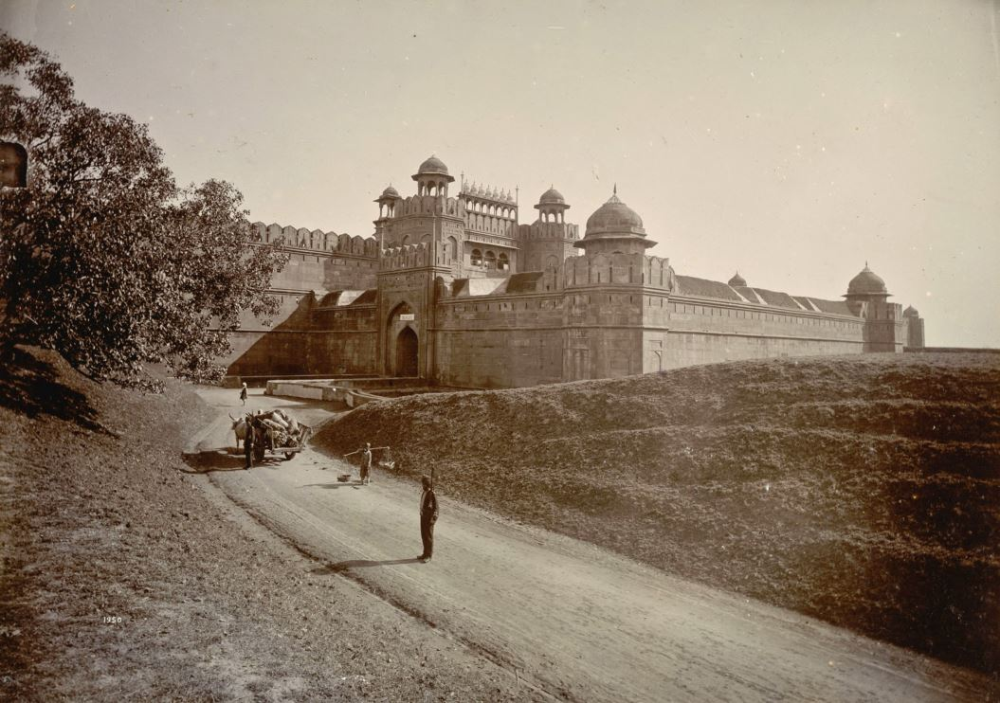

दिल्ली के आसपास का क्षेत्र संभवतः दूसरी सहस्राब्दी ईसा पूर्व से पहले बसा हुआ था और कम से कम 6 वीं शताब्दी ईसा पूर्व के बाद से लगातार रहने का प्रमाण है। यह शहर भारतीय महाकाव्य महाभारत में पांडवों की पौराणिक राजधानी इंद्रप्रस्थ का स्थान माना जाता है ।1526 में,बाबर बाबर ने भारत पर आक्रमण किया, पानीपत की पहली लड़ाई में अंतिम लोधी सुल्तान को हराया और दिल्ली और आगरा से शासन करने वाले मुगल साम्राज्य की स्थापना की ।
शाहजहाँ ने दिल्ली का सातवाँ शहर बनाया जो उसका नाम शाहजहानाबाद रखता है।1707 में औरंगजेब की मृत्यु के बाद , मुगल साम्राज्य के प्रभाव में तेजी से गिरावट आई क्योंकि डेक्कन पठार से हिंदू मराठा साम्राज्य प्रमुखता से उभरा।1757 में, अफगान शासक, अहमद शाह दुर्रानी ने दिल्ली को बर्खास्त कर दिया। 1803 में, द्वितीय आंग्ल-मराठा युद्ध के दौरान , ब्रिटिश ईस्ट इंडिया कंपनी की सेना ने दिल्ली की लड़ाई में मराठा सेना को हराया ।
यह शहर 1858 में ब्रिटिश सरकार के सीधे नियंत्रण में आया था। इसे पंजाब का एक जिला प्रांत बनाया गया था ।2001 में, नई दिल्ली में संसद भवन में सशस्त्र आतंकवादियों ने हमला किया, जिसमें छह सुरक्षाकर्मी मारे गए।भारत को संदेह था कि पाकिस्तान-आधारित आतंकवादी समूह हमले के पीछे थे, जिससे दोनों देशों के बीच एक बड़ा कूटनीतिक संकट पैदा हो गया।दिल्ली में २००५ और २०० , में और अधिक आतंकवादी हमले हुए , जिसके परिणामस्वरूप कुल १०३ मौतें हुईं।